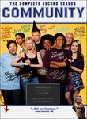

Community
Stephen Klancher
...has seen 52
...has seen 0.9 hours
...has not seen 1 hours

Timeline
Most Recent:
Paradigms of Human Memory
First Unseen:
Applied Anthropology and Culinary Arts (# 47)
...has seen 52
...has seen 0.9 hours
...has not seen 1 hours
Timeline
Most Recent:
Paradigms of Human Memory
First Unseen:
Applied Anthropology and Culinary Arts (# 47)


Stephen Klancher: January 1, 2012 
I watched this episode because I was told it mentioned Farscape. Now that I've verified the veracity of the claim, I must watch the whole series.